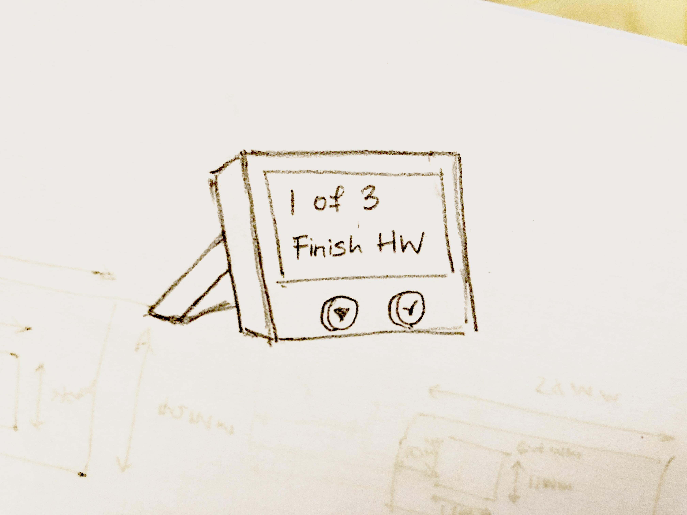
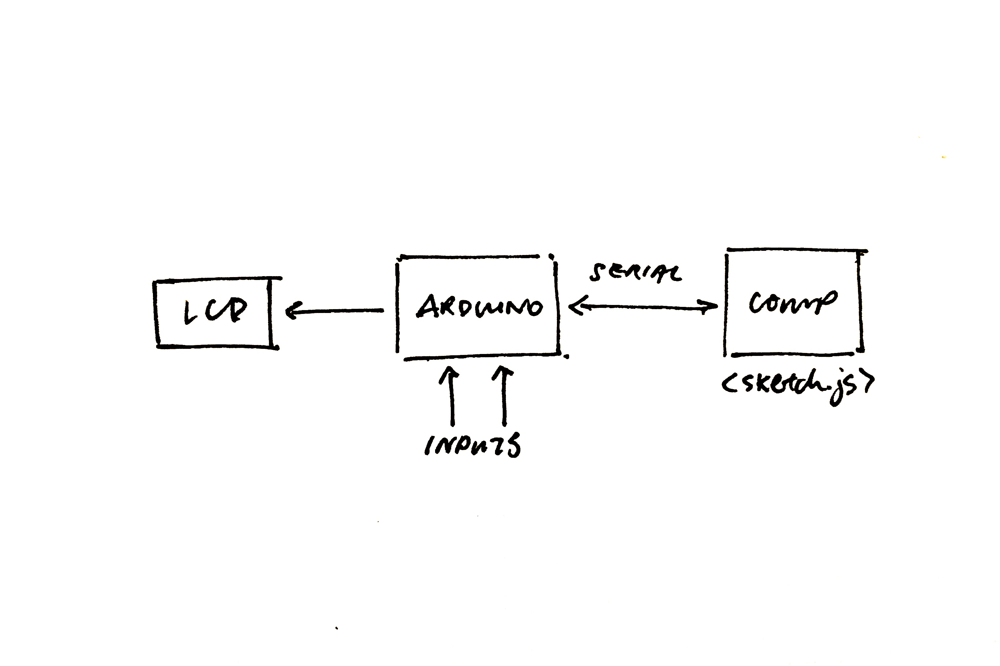
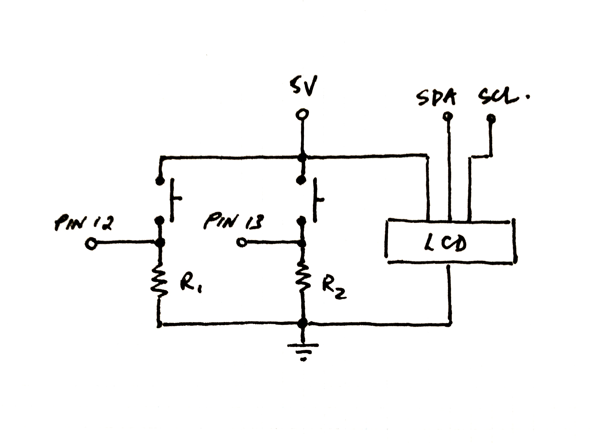
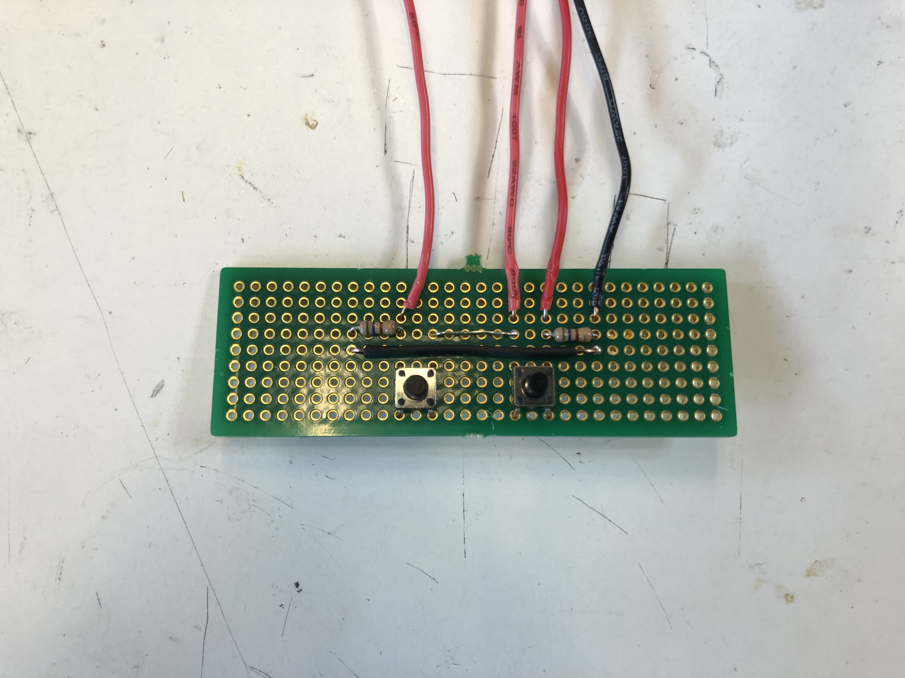

Concept


The motivation for this project came from my an inspiration to have a physical object that helps me keep track of my daily routines rather than from an app hidden on my phone/laptop. This product involves an arduino that displays the items on an LCD and communicates via serial with a locally hosted webpage.
Schematic


The schematic for this project is relatively simple. There are only two switches on board, one to traverse between action items, and the other to check of action items. The LCD used in this project uses a shield that supports the I2C protocol and hence provides the pins for the SDA and SCL connections. The buttons part of the circuit is soldered onto a PCB.
sketch.js File

"use strict";
const ABS_MAX = 15; // Maximum number of to-dos that you can create.
let serial; // variable to hold an instance of the serialport library.
let portName = '/dev/cu.usbmodem14101' // rename to the name of your port.
let button, input; // button and input are used as pointers to the text field and submit button
let upper; // upper keeps track of the number of todos in the array.
let todoArr = [], todoDisp = []; // todoArr stores the strings of todos, todoDisp stores the html li objects created
function setup() {
// Serial connection setup
serial = new p5.SerialPort(); // make a new instance of the serialport library
serial.on('list', printList); // set a callback function for the serialport list event
serial.on('connected', serverConnected); // callback for connecting to the server
serial.on('open', portOpen); // callback for the port opening
serial.on('data', serialEvent); // callback for when new data arrives
serial.on('error', serialError); // callback for errors
serial.on('close', portClose); // callback for the port closing
serial.list(); // list the serial ports
serial.open(portName); // open a serial port
// Create Character Counting label
createElement('p',"16 characters remaining.").parent("char-count");
// Create Input Field
input = createInput(); // create input HTML element
input.id("textfield"); // set css id of input field
input.parent("form"); // nest the text field inside the form div
// Create Button
button = createButton("add"); // create button HTML element
button.id("addbutton"); // set css id of button
button.parent("form"); // nest the button inside the form div
button.mousePressed(createNewItem); // set an event listener for the button
upper = 0; // set the initial number of todos to 0.
}
// Creates a new todo item based on the input field only if:
// item is not an empty string and the maximum amount of todos hasn't been reached
function createNewItem() {
let item = input.value(); // retrieve string from input field
if ((item != "") && (item != " ") && (todoArr.length <= ABS_MAX)) {
todoArr[upper] = item; // append new item into array
// console.log(todoArr);
serial.write(stringifyArray()); // send the new array to arduino.
upper++; // increment the number of items.
displayToDos(); // display the new array of items.
}
// refresh input field and char count on webpage
input.value("");
document.getElementById("char-count").innerHTML = "16 characters remaining.";
}
// Removes all of the li DOM elements created previously and
// recreates new li DOM elements based on updated array.
function displayToDos() {
todoDisp.forEach(obj => obj.remove()); // remove all li elements on display.
for (let i = 0; i < upper; i++) { // create new li elements from the array and nest it within the ol element.
todoDisp[i] = createElement("li",todoArr[i]).parent("list");
}
console.log("mapped: " + todoDisp);
}
// Checks the serial for data from the arduino.
// If 1 is received, reset the arduino with the todolist in the webpage.
// If a value greater than 2 & less than upper + 2 is received, remove
// If the value is at least upper + 2, the arduino is refreshed with the todolist in the webpage.
// 0s are ignored as they're occasionally sent through serial from unavoidable synchronicity issues.
function serialEvent() {
if (serial.available()) { // if the info is being sent through the serial.
let value = parseInt(serial.readLine()); // retrieve data from seriald as an int.
console.log("value: " + value);
if (value == 1 || value >= upper + 2) { // if the value is 1 or greater than the no. of todos in the webpage
serial.write(stringifyArray()); // write array to arduino
} else if (value > 1) { // if value is greater than 1 (a todo item is completed)
value -= 2; // change the value back to an index
if (value < upper - 1) { // if index is not at the end of the array
for (let i = value; i < upper; i++) { // shift each element to the left.
todoArr[i] = todoArr[i+1];
}
}
todoArr.pop(); // pop out the last element (which is undefined).
(upper > 0) ? upper-- : upper = 0; // decrement upper.
displayToDos(); // display the new todos
}
}
}
// Sets Enter key as an input method.
function keyPressed() {
if (keyCode == 13) createNewItem(); // 13 is the Enter key.
}
// Updates the char count above the text field and restrict the user from inputting more than 16 chars.
function keyReleased() {
let count = 16 - input.value().length; // set count to be the remaining number of chars available.
if (count < 0) { // if there are no more available chars
input.value(input.value().substring(0,16)); // restrict the string in the text field to 16.
count = 0; // keep count at 0.
}
// update char count on webpage
document.getElementById("char-count").innerHTML = count + " characters remaining.";
}
// Creates a string of all of the todolist items from the array.
// Each string is 16 characters long. If the sentence is shorter than 16 sentence,
// it is padded with spaces at the end.
function stringifyArray() {
let arrStr = ""; // create an empty string
if (todoArr.length > 0) { // if there's sth in the array
todoArr.forEach((el) => { // append each todo to the string
if (el) arrStr += el.padEnd(16, " "); // pad todo with spaces up to 16 chars
});
} else { // if there aren't any items
arrStr = " "; // set as a single space
}
return arrStr; // return the string
}
// console logging functions for serial protocols
const printList = (portList) => portList.forEach((element, index) => print("["+index+"] "+element));
const serverConnected = () => print('connected to server.');
const portOpen = () => print('the serial port opened.');
const serialError = (err) => print('Something went wrong with the serial port. ' + err);
const portClose = () => print('The serial port closed.');